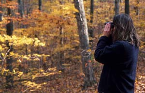

This winter, more than 50,000 volunteers across North America will work together to identify and count wild birds as part of the Christmas Bird Count. This annual event, coordinated by the National Audubon Society, combines the totals collected by local birders to produce a yearly snapshot of winter bird populations.
The data is used by biologists to study variations in bird populations as well as the underlying environmental reasons behind those changes. While some bird species are declining, other populations are growing and expanding their ranges. For example, mourning doves are expanding their range north into the northern United States and Canada. One of several factors behind that change may be increasingly warm winter temperatures.
Geoff LeBaron, director of the Christmas Bird Count, says that last year more than 2,000 local field parties took part in the count. The count is a long tradition-it began more than 100 years ago-but LeBaron says it’s only been within the past 20 years that the scientific community has embraced it as a rich source of data and developed new methods for analyzing the records.
“It basically has become the best tool for looking at how birds are doing in the early winter period,” LeBaron says. “Since the methodology is standardized, we’re able to actually see what kind of trends there are with the birds we’re counting.”
LeBaron says that for many people, local birdwatching is the catalyst that gets them involved with national conservation issues. Often, local forests or wetlands need to be protected, and for migratory birds, habitat has to be protected everywhere along their routes.
The Christmas Bird Count is conducted from Dec. 14 to Jan. 5 every winter, and is open to both amateur birdwatchers and trained ornithologists. Organized groups spend a day counting birds in assigned, 15-mile-diameter circles. Inexperienced observers are paired with veteran birders to help keep the count accurate.
John Stuart has been participating in the Christmas Bird Count for 30 years. He lives in Washington state, about an hour from the Canadian border, and says that each year the count in his area records 65 to 75 species.
“The counts are done in a scientific manner, but it’s just a whole lot of fun,” Stuart says. “You get a carload of people, and you go out and drink your coffee and count birds all day. It’s a great social event.”
Indeed, birding is often just an excuse to get out and enjoy nature. “It’s a good old spiritual connection to the world, one that’s sometimes hard to find when you’re walking on carpet,” Stuart says. He says he doesn’t see birding as a hobby at all: “It’s just part of living and knowing what’s going on around you.”
Check out the resources below for bird photos and birdwatching tips, as well as more information on the Christmas Bird Count and other opportunities to watch and count birds.
Christmas Bird Count
Dec. 14, 2006 to Jan. 5, 2007
Find and contact your local Audubon chapter to get more information on nearby counts.
Great Backyard Bird Count
Feb. 16 to 19, 2007
Open to birders of all experience levels.
Project Feederwatch
November to April
Count birds at home or as a classroom project.
eBird
Year-round Resources for managing data for experienced birders.
|
 RICHARD DAY/DAYBREAK IMAGERY Join the Winter Birdwatchers |
RICHARD DAY/DAYBREAK IMAGERY Tufted Titmouse |
|